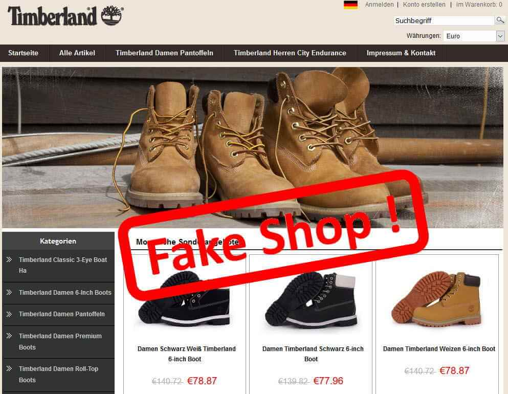

Čo sú to online podvody?
Online podvody sú rôzne formy klamstva a manipulácie, ktoré sa dejú cez internet s cieľom oklamať ľudí, získať od nich peniaze alebo osobné údaje.

Najčastejšie typy online podvodov
- Falošné obchody: Weby, ktoré predávajú neexistujúci tovar.
- Romantické podvody: Podvodníci sa vydávajú za partnerov a žiadajú peniaze.
- Investičné podvody: Ponuky na zaručený zisk, najmä cez kryptomeny.
- Správy o výhre: Vyžadujú poplatok za vymyslenú výhru.
- Únos účtu: Ukradnutý účet na sociálnej sieti slúži na ďalšie podvody.
Ochrana pred podvodmi
- Neposkytuj citlivé údaje neznámym osobám.
- Kontroluj bezpečnosť stránok (https).
- Buď opatrný pri výhodných ponukách.
- Neposielaj peniaze neznámym ľuďom.
- Používaj silné heslá a dvojfaktorové overenie.